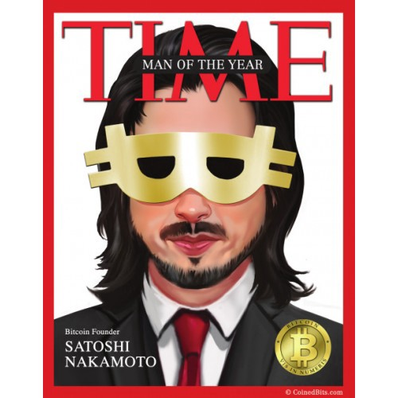

Satoshi Nakamoto

Development of bitcoin:
- In October 2008, Nakamoto published a paper on the cryptography mailing list at metzdowd.com describing the bitcoin digital currency. It was titled "Bitcoin: A Peer-to-Peer Electronic Cash System". In January 2009, Nakamoto released the first bitcoin software that launched the network and the first units of the bitcoin cryptocurrency, called bitcoins.Satoshi Nakamoto released the Version 0.1 of bitcoin software on Sourceforge on 9 January 2009.
- Nakamoto claimed that work on the writing of the code began in 2007. Nakamoto knew that due to its nature, the core design would have to be able to support a broad range of transaction types. The implemented solution enabled specialized codes and data fields from the start through the use of a predicative script.
- Nakamoto created a website with the domain name bitcoin.org and continued to collaborate with other developers on the bitcoin software until mid-2010. Around this time, he handed over control of the source code repository and network alert key to Gavin Andresen, transferred several related domains to various prominent members of the bitcoin community, and stopped his involvement in the project. Until shortly before his absence and handover, Nakamoto made all modifications to the source code himself.
- On 3 January 2009, the bitcoin network came into existence with Satoshi Nakamoto mining the genesis block of bitcoin (block number 0), which had a reward of 50 bitcoins. Embedded in the coinbase transaction of this block was the text:
- The Times 03/Jan/2009 Chancellor on brink of second bailout for banks.
- The text refers to a headline in The Times published on 3 January 2009. This note has been interpreted as both a timestamp of the genesis date and a derisive comment on the instability caused by fractional-reserve banking. It is a strong indication that the first block was mined no earlier than this date. The genesis block has a timestamp of 18:15:05 GMT on 3 January 2009. This block is unlike all other blocks in that it doesn't have a previous block to reference. This required the use of custom code to mine it. Timestamps for subsequent blocks indicate that Nakamoto did not try to mine all the early blocks solely for himself.
- As initially the sole and subsequently the predominant miner, Nakamoto was awarded bitcoin at genesis and for 10 days afterwards. Except for test transactions these remain unspent since mid January 2009. The public bitcoin transaction log shows that Nakamoto's known addresses contain roughly one million bitcoins. At bitcoin's peak in December 2017, this was worth over US$19 billion, making Nakamoto possibly the 44th richest person in the world at the time.
With e-currency based on cryptographic proof, without the need to trust a third party middleman, money can be secure and transactions effortless.
– Satoshi Nakamoto